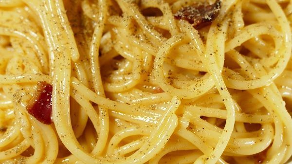

Espaguetis a la carbonara

- Preparación:30 minutos
- Tipo de receta: Plato principal
- Dificultad baja
Descripción:
Los espaguetis a la carbonara es probablemente la forma más internacional de preparar esta pasta.
La auténtica salsa carbonara de italia contiene yema de huevo, queso y bacon. No tiene nata,
ingrediente que le solemos añadir en España. Incluso hay muchas versiones que tan solo contienen nata.
Puedes hacerla así, si quieres pero aquí, haremos unos espaguetis a la carbonara auténticos.
Ingredientes:
- 400g de espagueti
- 2 huevos
- 150g de queso curado (parmesano, manchego…)
- 120g de bacon o panceta
- 2 vasos de aceite de oliva
- un pequeño chorrito de aceite de oliva
- Sal y pimienta
Preparación:
- Ponemos un puñadito de sal (generoso) en abundante agua hirviendo.
Después añadimos los espagueti y los dejamos cocer aquí alrededor de 10 minutos.
hasta que estén al «dente». Conviene removerlos con frecuencia sobre todo al principio de la cocción,
para que no se peguen.
- Mientras se cuecen preparamos la carbonara. En un bol añadimos las yemas de los huevos.
La clara es mejor guardarla para otra elaboración ya que, si la añadimos, parecerá más una tortilla de espaguetis,
que una salsa en sí. Pero si no te importa, puedes añadirla. Añadimos también el queso rallado y mezclamos ambos ingredientes con un tenedor.
Quedará una especie de masa muy densa y ésta, será la carbonara.
- na vez hecho esto y cuando los espaguetis estén cocinados, guardamos unos cuantos cucharones del caldo de la cocción.
Después escurrimos los espaguetis del resto del caldo
- Sin demora, ya que será el propio calor residual de los espagueti los que vayan a cocinar la carbonara, echamos la pasta en el bol donde la habíamos preparado.
Añadimos el bacon, con el juguito que hayan podido soltar y un poco del caldo de la cocción. Removemos todo bien con un tenedor para que los espaguetis absorban toda la salsa.
Si ves que queda muy densa, puedes añadir más caldo de la cocción, hasta que haya quedado una salsa muy cremosa (no olvides remover enérgicamente todo.
La pasta es muy porosa y absorbe las salsa con relativa facilidad. Pero necesita ser removido para ayudar a este proceso)
- Finalmente, cuando hayamos conseguido la cremosidad de la salsa deseado, espolvorear con abundante pimienta negra recién molida. Se dice que el nombre «carbonara»
viene del color que le da esta especia, que recuerda el color del carbón. Servir inmediatamente
Estos son los auténticos espaguetis a la carbonara. Sin nata. Aunque si los quieres con nata, puedes probar a eliminar el caldo de la cocción y sustituirlo por este ingredientes.
Sea como sea como más te gusten, ¡espero que preparares esta receta de pasta!
¡Buen Provecho!